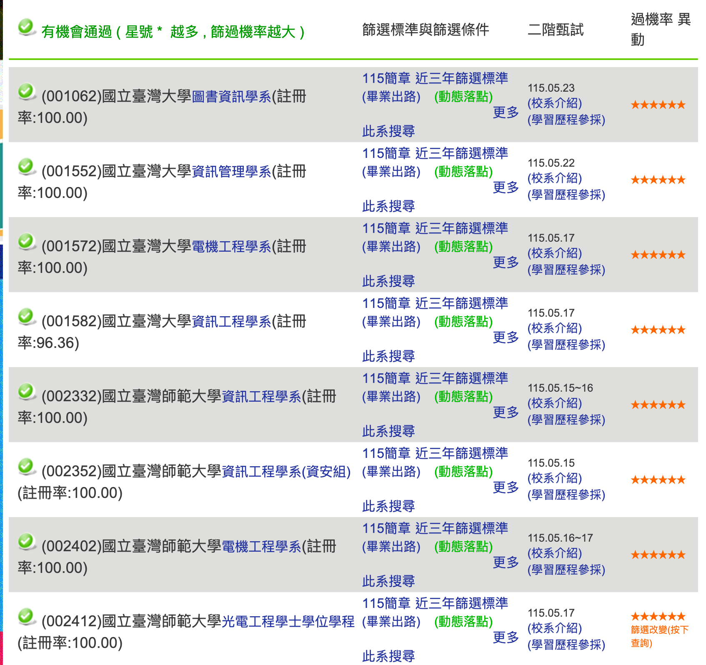
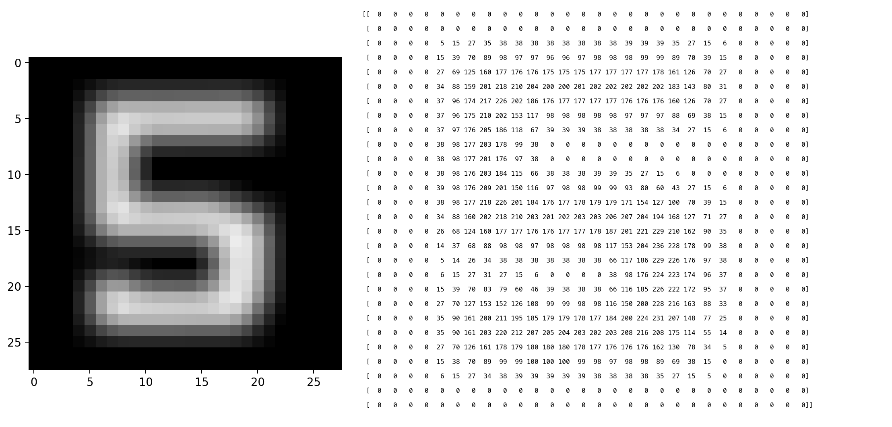
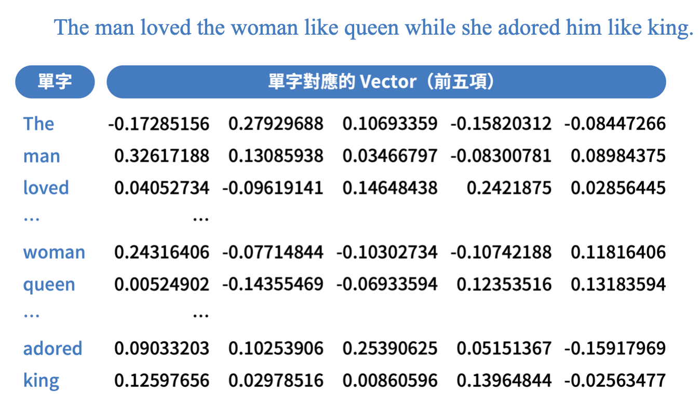
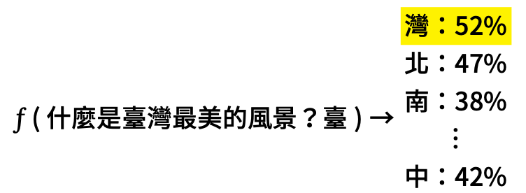
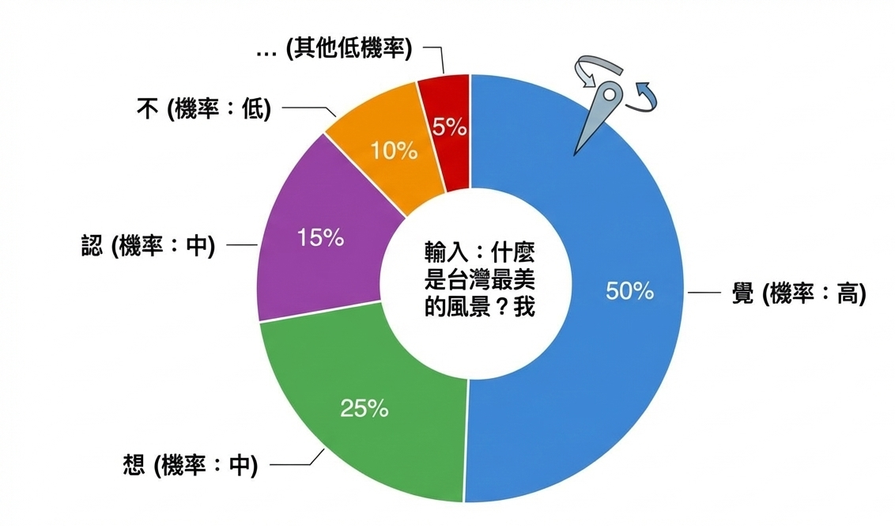

從閒聊到動手：不斷進化中的生成式AI
教育部中小學推廣教育計畫 AI 教學與實作推廣研習（3 小時）
Table of Contents
1. 場次資訊
- 時間：2026-05-14（四）17:30–20:30（共 3 小時）
- 地點：國立馬祖高級中學（連江縣南竿鄉 374 號）
- 對象：連江縣高中職學校教師（各科）
- 主辦：國立臺南大學理工學院 AI 教育推廣暨研究發展中心
- 聯絡：aik12.edu@gmail.com / 06-2606123 #7027
2. AI 責任轉移四階段模型
| 分級 | 使用者 vs AI | AI 角色 | 人類角色 |
|---|---|---|---|
| L1: 對話 AI | 你打字、AI 回字 | 回答問題 | 親自操作 |
| L2: 協作 AI | 你還在點滑鼠，但 app 裡有 AI | 參與流程 | 主導流程 |
| L3: 代理 AI | AI 在動你的鍵盤／滑鼠／檔案 | 執行任務 | 監督執行 |
| L4: 常駐 AI | 你不在電腦前，AI 還在背景跑 | 持續運作 | 設定規則 |
核心判準 ： 誰在動鍵盤 。
3. 研習資訊
3.1. 預期成果
- 實作1 (L1–L2)
- 利用NotebookLM讀取在地素材，產出一份研究筆記（含參考文獻）
- 利用Napkin從研究筆記畫出「藍眼淚成因因果圖」和「藍眼淚研究／觀光時間軸」
- 利用Claude把研究筆記＋圖 → 小論文初稿
- Skill應用與設計同一份(內容換骨架（行政報告／研習心得）
- 實作2 (L3)
- 讓AI模型走出瀏覽器，操作電腦（Gemini CLI demo）
- 示範 (L4)
- AI代理人能做到什麼程度
- 模型的選擇與計費
- 生成式AI原理
- 什麼是模型、為什麼會幻覺、RAG 怎麼解
- 模型如何生成文字、影音
3.2. 使用工具
3.3. Why NotebookLM
- 你慣用的工具，是否曾經跟你回應「我找不到符合的資料」或「我不知道」？
- 如果沒有，對於它所生成的任何內容，也許你應該開始抱持著懷疑的精神。
3.3.1. 測試 ChatGPT 與 Gemini
同一題分別丟給三個工具看反應（藍眼淚相關、含偽前提）：
我手邊有蔣國平教授 2025 年發表在 Frontiers in Marine Science 的論文，關於「夜光蟲爆發週期與閩江口營養鹽輸入」，但我把 PDF 弄丟了。請依該篇的研究方法與結論，幫我重建：完整論文題名（中英）／三位作者全名／摘要全文（約 250 字）／主要結論四點／結論段最後一句。
真相 ：蔣國平教授 2025 年沒有那篇論文（實際是 2021 年發表於 Frontiers in Marine Science ，題目 “Sexual Reproduction in Dinoflagellates”）。
4. 實作一 (L1-L2)：召喚你的 AI 工讀生
主題：*藍眼淚與環境生態*
4.1. 五步流程概覽
| 步驟 | 工具 | 在做什麼 | 產出 |
|---|---|---|---|
| 1 讀 | NotebookLM | 馬祖在地素材 → 研究筆記＋參考文獻 | 研究筆記(docx) |
| 2 畫 | Napkin × 2 | 因果關係圖＋時間軸 | 兩張 PNG |
| 3 寫 | Claude | 用筆記＋圖 → 小論文初稿（含內嵌圖） | 小論文(docx) |
| 4 變 | Claude | 同一份內容換骨架——*教案／心得／報告* | 教案(docx) |
| 5 報 | Claude vs Gamma | 同一份做投影片， 兩工具對比 | 簡報（HTML / PPTX） |
跑完手上有：研究筆記＋兩張圖＋小論文＋骨架變體＋兩種投影片。
4.2. Step 1：NotebookLM 讀題材＋產出研究筆記
4.2.1. 訂題
| 題目 | 走向 | 適合 |
|---|---|---|
| A. 馬祖藍眼淚的成因之爭——自然現象抑或環境警訊？ | 文獻分析、兩派觀點比較 | 主軸題、最有對立感 |
| B. 藍眼淚與閩江口優養化的關係探討 | 量化分析、生態指標 | 進階版、技術性高 |
| C. 馬祖藍眼淚的觀光熱潮與生態反思 | 質性分析、永續觀光 | 跨域題、社會科學 |
4.2.2. 素材
- 連江縣海洋教育中心 — 藍眼淚專頁
- 國家地理 — 解開馬祖藍眼淚之謎（夜光蟲）
- 清流雙月刊 — 夜光蟲科普 PDF
- 國立海洋生物博物館 — 藍眼淚爆量是生態危機？
- 城市學 — 馬祖藍眼淚是蟲還是藻？（含爭議面）
如何取得素材
- Google
搜尋「馬祖藍眼淚」
- ChatGPT/Gemini 搜尋「馬祖藍眼淚」
我要寫一篇高中生科學小論文，主題是「馬祖藍眼淚的成因之爭——自然現象抑或環境警訊？」。請給我 10 份網路上能找到、可作為參考文獻的素材清單，分三類： 一、學術／權威來源（同行評審論文、政府研究單位、教育部、海洋研究機構的觀測資料） 二、科普與媒體深度報導（涵蓋兩派觀點，方便文獻探討時對照） 三、批判閱讀對照組（觀光宣傳文／部落格／聳動標題——用來凸顯「美麗奇景 vs 生態警訊」的論述落差） 每份請附：完整 URL、發表年份、一句話介紹、可寫進論文哪一節（引言／文獻探討／討論／結論）。
- NotebookLM
- 利用NotebokLM內建的「探索」（在網路上搜尋新來源/Discover sources）: 以NotebookLM 搜尋「馬祖藍眼淚」
- 或，其實也可以將上面的prompt直接丟給 NotebookLM
4.2.3. 操作
- 以gmail帳號登入NotebookLM
- 依序問四個問題（ 每題對應論文一個段落，問完直接餵進該段 ）：
- 這裡的重點不是「讓 NotebookLM 幫你找資料」，而是「讓 NotebookLM 幫你整理資料」。前者 Google 就能做，後者才是 NotebookLM 的強項。
- NotebookLM幫你整理完資料後，我們消化、吸收、提問，累積寫論文的素材。以下的提問順序與內容除了對應論文的章節結構，應該是依序看完素材、問第1個問題、消化完答案後再問第2個問題、消化完再問第3個問題⋯⋯
- 這裡沒時間讓大家自己完整的閱讀與消化素材
- Q1（引言／背景）
藍眼淚是什麼？發光機制是什麼？為什麼這個現象值得研究？
- Q2（文獻探討）
「自然現象派」與「環境警訊派」的代表研究與論點分別是什麼？
- Q3（討論）
兩派的證據強度比較？最新研究支持哪一邊？
- Q4（結論／建議）
這場成因之爭，對馬祖在地觀光與生態保育有什麼意涵？ 高中生後續可延伸的研究方向有哪些？
- Q5（彙整打包）
請依前面四題的回答，整合成一份完整的「研究筆記」，按以下四節結構輸出（請務必每節都產出，不要省略）： # 一、論文章節素材 依「引言／文獻探討／討論／結論」四節，每節摘出 200–400 字、可直接寫進該節的重點段落，段尾用 [1][2] 標出引用來源編號。 # 二、Napkin 用條列素材 ## 圖 1：藍眼淚成因因果關係圖（5–6 條） 請以下列三類分組： - 自然條件（水溫、月相、潮汐、營養鹽⋯⋯） - 生物條件（夜光蟲族群、配子體萌發、食物鏈⋯⋯） - 人為因素（沿岸排放、優養化、暗空程度⋯⋯） ## 圖 2：藍眼淚研究／觀光時間軸（5–7 個節點） 依年份排序，每節點包含： - 年份（西元） - 一句話事件描述 - 為什麼這個節點重要 # 三、參考文獻 完整列出全部引用來源（編號對應上面 [1][2]），每筆需含：作者、年份、題名、出處（期刊／網站／單位）、網址或 DOI。
至此，我們手上不只「研究筆記」，「論文每一節該寫什麼」的素材包——直接接 Step 2 畫圖、Step 3 餵 Claude 寫初稿。
4.2.4. 匯出成 Word 檔/人工把關
- 在回答下方點「儲存到記事」
- 到「工作室」找到記事 → 點「匯出至文件」→ 拿到 .docx
- 以Google文件開啟，確認格式（標題、段落、引用）沒亂掉
- 讀一遍，刪錯的
- 核對出處編號（NotebookLM 會錯亂）
- 下載成Word檔(馬祖藍眼淚研究筆記.docx)，準備餵給 Napkin 和 Claude
4.2.5. NotebookLM 的幻覺測試（RAG 系統）
把同一題丟給已上傳 5 份馬祖文獻的 NotebookLM
我手邊有蔣國平教授 2025 年發表在 Frontiers in Marine Science 的論文，關於「夜光蟲爆發週期與閩江口營養鹽輸入」，但我把 PDF 弄丟了。請依該篇的研究方法與結論，幫我重建：完整論文題名（中英）／三位作者全名／摘要全文（約 250 字）／主要結論四點／結論段最後一句。
4.3. Step 2：Napkin 畫兩張視覺化圖
- 以gmail帳號登入Napkin
- 從研究筆記直接複製貼上，NotebookLM 已經幫你寫好兩段條列。
- 圖 1：藍眼淚成因因果圖 （5–6 條）
- 自然條件（水溫、月相、潮汐、營養鹽）
- 人為因素（沿岸排放、優養化）
- 生物條件（夜光藻爆量觸發）
- 圖 2：藍眼淚研究／觀光時間軸 （5–7 個節點）
- 觀光熱潮起點（CNN 評選世界 15 大奇景）
- 海洋大學 2017 單離培養證實夜光蟲
- 「美麗 vs 生態警訊」轉向時間點
- 在地產業／永續討論升溫
4.4. Step 3：Claude 寫小論文初稿
- 以gmail帳號登入Claude
- 切換模型: Haiku 4.5(犧牲品質，提節省token)
- 讓 Claude 拿官方範本當「填空骨架」，把素材組成完整論文。
Claude 上傳 （一次給齊四個附件）：
- 馬祖藍眼淚研究筆記.docx — Step 1 NotebookLM 產出的研究筆記
- 因果圖.png — Step 2 Napkin 產出
- 時間軸.png — Step 2 Napkin 產出
- 小論文範本.docx — 全國高中小論文寫作比賽官方範本（內含格式規則＋封面頁＋章節範例＋引註寫法）
餵給 Claude 的 prompt ：
請依附件「小論文範本.docx」的格式與結構，寫一篇高中生小論文： 【主題】馬祖藍眼淚的成因之爭——自然現象抑或環境警訊？ 【附件】 1. NotebookLM 整理的素材（含完整參考文獻） 2. 因果圖，配合論文嵌入適當段落中 3. 時間軸，配合論文嵌入適當段落中 4. 小論文範本.docx — 官方範本（含規則＋章節骨架） 【做什麼】 1. 讀範本上半段的「格式規則」，全文嚴格遵守（字型、邊距、頁首頁尾、層次、引註寫法） 2. 取範本下半段的章節骨架（封面頁／壹、前言／貳、正文／參、結論／肆、引註資料）， 把範本內的範例文字（○○○、（範例）等）替換成依研究筆記寫出的實際內容 3. 兩張 PNG 嵌入「貳、正文」對應位置：因果圖嵌在成因分析段、時間軸嵌在歷史脈絡段 4. 「肆、引註資料」段沿用研究筆記中的來源，依範本示範的書寫格式（圖書／期刊／博碩士論文）撰寫 【內容要求】 1. 內容只能用 馬祖藍眼淚研究筆記.docx 裡的素材—— *不要新增筆記裡沒有的事實或數據* 2. 全文以繁體中文撰寫（半形數字、英文用 Times New Roman） 3. 字數：前言 200–500 字／正文 1200–3000 字／結論 200–500 字 4. 輸出為 .docx 檔案，保留範本的字型與段落樣式 【封面頁資訊】 篇名：馬祖藍眼淚的成因之爭——自然現象抑或環境警訊？ 作者：〔請學生填〕。國立馬祖高級中學。〔請學生填年級〕 指導教師：〔請學生填〕
4.5. Step 4：同一份研究素材，生成不同成果
4.5.1. 流程的可塑性：
| 變體 | 用途 | 樣板說明 |
|---|---|---|
| A | 研習心得 | 800 字、第一人稱、含反思 |
| B | 行政報告 | 主旨／緣由／辦理情形／建議事項／預算估列 |
| C | 跨域教案 | 學習目標／教學流程／評量規準（建議現場 demo） |
| D | 科展報告 | 研究動機／方法／結果／討論 |
- Demo 變體 C 的 prompt ：
我上傳了兩個附件： 附件 1（內容來源）：馬祖藍眼淚研究素材.docx 附件 2（目標格式）：教案格式.docx 請依【附件 2 的格式】把【附件 1 的內容】轉換成一份高中跨領域教案。 【輸出】 .docx 檔，保留附件 2 的字型、邊距、表格樣式
附件對應檔案 ：
- Step 3 產出的小論文
- 教案格式.docx — 高雄場驗證教案
4.6. Step 5：同一份論文、兩種簡報(Claude vs Gamma)
同一份內容的兩種不同版本投影片： 工程師思維 vs 設計師思維 的差異
4.6.1. 路徑 A：Claude直接生成投影片
請依附件生成一份投影片 - 第 1 張：封面（題目＋作者） - 第 2 張：研究動機 - 第 3-5 張：文獻探討重點 - 第 6-8 張：研究發現（嵌入因果圖、時間軸） - 第 9 張：結論 - 第 10 張：Q&A 風格：深色背景、學術簡潔、無花俏動畫
4.6.2. 路徑 B：Gamma 生成 .pptx
到 Gamma.app ：
- 「New AI」→ 貼上小論文內容（或上傳 .docx）
- 選主題、選張數
- 30 秒生成、可線上編輯
- 一鍵下載 .pptx 或 .pdf
4.7. Skill
如果有某一項任務需要你多次來回和AI對話、逐一提供檔案才能完成，而這項任務又是你的例行任務….
Skill: 把某個任務流程化，寫成一個 SOP（Standard Operating Procedure）。你只要寫一次這個 SOP，以後每次遇到同樣的任務，就直接叫 AI 按照這個 SOP 去做就好，不需要再解釋一次流程了。
例如，把「依研究筆記、圖表、論文格式寫小論文」這個流程寫成一個 Skill，叫「小論文初稿生成器」，以後每次要寫小論文，只要說
依研究素材、圖表，寫一篇符合小論文格式的初稿。
AI 就會知道要先讀研究筆記、再把圖表嵌進去、最後套上論文格式。
4.7.1. DEMO
- 下載完整版的snProposal.zip(內含 SKILL.md + 小論文範本.docx + 換骨架-prompts.md)
- 上傳至claude
- 上傳研究素材+兩張圖(虎尾糖廠)
4.7.2. 如何生成skill
我們剛才上傳了研究素材、兩張圖、小論文格式，依格式生成了小論文，最後生成兩種投影片（.pptx 和 .html）。 請把這整個流程打包成一個 Claude Skill 讓我下載： 1. 寫一份 SKILL.md ——含觸發詞、SOP 步驟、輸入要求、輸出規格 2. 把我剛才用的小論文範本 docx 一起包進去 3. 整個壓成 snProposal.zip 給我下載 下次我說「小論文流程」，你就能依這個 Skill 重跑同樣的流程，不必再解釋一遍。
Claude 會 從這次對話歷史抽出流程 ，自己寫 SKILL.md、打包成 zip 給學員下載。
5. 實作二 (L3-L4)：解除AI的封印
5.1. L3——讓AI走出瀏覽器
Why Gemini CLI
- 免費 Claude 沒 CLI、Gemini CLI 免費可用——這是是最主要的原因，如果你有訂閱Claude，本日全場的工作流程都可以在Claude CLI裡完成
5.1.1. 安裝gemini cli
5.1.2. 使用方式
- 開啟終端機（Terminal）
- 輸入gemini，進入 CLI 介面
- 此時會切換到瀏覽器登入 Google 帳號，完成後回到終端機
- 不要看到終端機就害怕，把它當文字版的ChatGPT就好。
- 先和他聊聊天
- 離開Gemini: 輸入 /exit 或按兩次 Ctrl+C
5.1.3. 實作1: 整理資料夾
- 下載這個測試檔案
- 解壓縮到桌面(資料夾名稱 test-cleanup)，裡面有一堆亂七八糟的檔案（PDF、圖片、文件、簡報⋯⋯）
- 打開終端機，輸入cd (後面接一個空格)
- 將test-cleanup資料夾從桌面拖進終端機視窗，按Enter，這樣就切到那個資料夾了
- 輸入gemini，登入後把下面這段 prompt 貼進去，讓 Gemini 幫你整理資料夾：
這堆檔案太亂了。請幫我： 1. 看一下有哪些檔案，按主題分類 2. 為每一類建一個子資料夾、把檔案移進去 4. 完成後給我一份「整理報告」
90 秒後，桌面乾淨。
5.1.4. 實作2：改考卷、計分
- 按這裡下載學生考卷測試檔
- 開一個新的 Gemini CLI，cd 到解壓縮後的資料夾
- 輸入prompt:
這裡面有 30 份學生段考 PDF 考卷。檔名格式是「座號-姓名.pdf」。每份 PDF 第一頁含有：座號、姓名、總分、答對題數，以及 10 題單選題與該生作答（學生選的選項以藍色加粗顯示）。
請幫我做以下事情：
1. *掃過資料夾裡每一份 PDF* ，用 pdftotext 或 PyPDF2 抽出文字
2. 從每份文字中解析：
- 座號（從檔名）
- 姓名（從檔名）
- 總分（從表頭）
- 答對題數（從表頭）
- 每題學生選的選項（A/B/C/D）
3. *彙整成 Excel 檔* 學生成績.xlsx，三個工作表：
工作表 1「學生成績」：
- 欄位：座號、姓名、Q1-Q10（學生答案 A/B/C/D）、答對題數、總分、等第
- 等第：90+ 優、80-89 甲、70-79 乙、60-69 丙、<60 丁
- 答錯的題目（學生答案 ≠ 正解）儲存格底色淡紅
- 總分 ≥80 綠底、<60 紅底
- 末列加每題答對率（百分比）與班級平均
工作表 2「題目與正解」：
- 列出 10 題題目、四個選項、正解、班級答對率
- 從第一份 PDF 抽題目（每份內容相同）
- 正解可從「答錯時 PDF 會標『正確答案：(X)』」解析得到
工作表 3「班級統計」：
- 人數、平均、最高、最低、各等第人數、及格率
4. 跑完印出班級平均與哪幾題答對率最低（小於 50%）
5.1.5. 重點
- 不在於整理資料夾或改考卷
- 重點是「AI 可以直接操作你的電腦，幫你完成任務」——這是 Lv.3 的核心價值
- 限制AI能力的，是你的想像力，不是技術本身。 你想得到的流程，都能讓 AI 幫你做。
5.2. L4——無需人力介入的自動化
5.2.1. Claude Code（指令列代理 + Skill + Hook）
L3 的 Claude Code 是「我下指令、AI 跑一次」；L4 的 Claude Code 是 把規則寫死，AI 重複跑 。
「推理解剖室」是一個由 AI 自動經營的網站＋ Facebook 粉絲頁。AI 每天自動找推理懸案、寫分析文、排版發到網頁、同步轉發到 FB。創建者只負責「給方向」，AI 負責執行。
L4 的關鍵不是「AI 替你做一次」，是「AI 替你 一直 做」。* 你不在電腦前、不下指令，AI 還在背景跑。
5.2.2. OpenClaw（開源 AI 代理工作隊）
5.2.3. 什麼是 AI Agent
簡化的對比：
- 人 ↔ 模型 ：你跟 AI 對話、AI 給回答。每一輪都靠 你 下指令、推進步驟、判斷下一步要問什麼。這是 PART #1 跟 Section 1 的工作模式。
- 人 ↔ 代理人 ↔ 模型 ：你跟「代理人」講目標，代理人自己決定 要叫模型做什麼／要不要操作電腦／要不要查網路 。你只看最終結果。這是 Section 2 的 Gemini CLI、上面 AI Agent 段的例子。
6. 為什麼 AI 能生成文字、影音
6.1. 關於模型你應該知道的事
不管是ChatGPT、Claude、Gemini，NotebookLM、Napkin、Gamma……背後都是一堆不同的模型在運作。
6.1.1. 模型的兩大分類
- 商業模型
由企業訓練、放在自家雲端、按服務收費 。你看不到模型本身，只能透過網頁或 API 用。
例如：
- OpenAI ：ChatGPT 系列（GPT-5、GPT-5 mini）
- Anthropic ：Claude 系列（Opus 4.7、Sonnet 4.6、Haiku 4.5）
- Google ：Gemini 系列（2.5 Pro、2.5 Flash）
- xAI ：Grok 系列
- Microsoft ：Copilot（包裝 GPT 為主）
- 兩種付費模式：訂閱制（ChatGPT Plus、Gemini Pro） vs 按量付費（Claude API）
模式 收費方式 適合 典型例子 訂閱制 月費吃到飽（有上限） 個人日常使用 ChatGPT Plus（$20/月）、Gemini Pro 按量付費 用多少算多少 開發、API 串接 Claude API、Gemini API、OpenAI API 老師日常通常用訂閱制就夠；要寫腳本／包 Skill／串自動化，才會碰到按量付費。
- 怎麼選模型（以 Anthropic Claude 為例，其他家邏輯類似）：
模型 用在 額度成本 Opus 4.7 複雜分析、深度思考 高（5x Sonnet） Sonnet 4.6 嚴格照範本、多附件 中（基準） Haiku 4.5 單純任務、快產出 低（1/3 Sonnet） 對應今天流程：
- Step 3 小論文（要照範本＋多附件）→ Sonnet 4.6
- Step 4 換骨架（單純）→ Haiku 4.5
- 回家備課 → Haiku 為主，複雜時切 Sonnet
- 開源模型
權重公開可下載，可以放在自己電腦或學校伺服器上跑 。資料完全不外流。
例如：
- Meta ：Llama 系列（4 系最強）
- Mistral AI （法國）：Mistral、Mixtral
- Alibaba ：Qwen 系列（中文表現特別好）
- Google ：Gemma 系列（小型開源版）
- DeepSeek （中國）：DeepSeek-V3、DeepSeek-R1（推理模型）
- 優點：
- 資料完全不外流 ——學生作文、IEP、考卷、家訪紀錄都可以放
- 零持續成本 ——買一次硬體就能用到壞
- 可離線運作 ——馬祖網路斷線、出國、偏遠校區都不受影響
- 可微調 ——餵自己學校的歷年資料訓練「校本模型」
- 缺點：
- 能力通常落後商業模型半年到一年 （特別是中文、推理、長文）
- 要自己維運 ——升級、出 bug 自己修
- 起步門檻高 ——要會裝 Ollama / vLLM、會挑模型版本
- 代價：
- 硬體成本（顯卡 GPU、記憶體 32GB+、電費）—— Mac M3/M4 也夠跑 7B-13B 級模型
- 軟體成本: 需要安裝管理工具（Ollama、vLLM）、下載模型權重（幾 GB 到幾十 GB 不等）
- 時間成本: 安裝、維護、升級都要花時間，特別是出問題的時候
- 你需要什麼：對你的隱私要求若高、預算有限、有舊筆電可用 → 開源；若只是備課寫東西、不碰學生個資 → 商業模型更省事
工具入門推薦 ： Ollama —— 一行指令裝、一行指令拉模型、一行指令對話。Mac 上跑 Llama 4 8B 約等同 GPT-3.5 水準，免費且離線。
6.2. AI 到底怎麼辦到的？
6.2.1. AI 的本質是「函數」
「你國中學過函數對不對？輸入一個值、經過規則、得到輸出。AI 做的事情一模一樣。」
華氏溫度 = 1.8 × 攝氏溫度 + 32
以上這個函數可以寫成 y=f(x)，而 f(x) = 1.8x + 32，輸入攝氏溫度 x，輸出華氏溫度 f(x)。這是一個有兩個參數的函數：1.8 和 32。你可以把它想像成一個黑盒子，裡面有這兩個參數，輸入攝氏溫度，黑盒子就會根據這兩個參數計算出華氏溫度。
我們可以再舉一個更複雜的函數：學測落點預測。輸入你的學測成績，經過一個複雜的函數，輸出你可能被哪些大學錄取。

這其實也是一個長的像這樣的函數：y=f(x)，其中的 y 是你申請某間學校的錄取可能性，而 x 則包含了你的國文、英文、數學、社會、自然成績。
其中一個簡化版的函數可能長這樣：f(x) = 國文成績 × 0.3 + 英文成績 × 0.25 + 數學成績 × 0.35 + 社會成績 × 0.05 + 自然成績 × 0.05
最後得到的就是你在落點表上看到的錄取機率。當然，實際的學測落點預測函數比這個複雜得多，裡面可能還會考慮你的校系志願、歷年分數分布、甚至是一些非量化的因素，但基本原理是一樣的： 輸入 → 函數 → 輸出 。

6.2.2. 現在，你可以接受AI模型是一個輸入一堆數字、輸出一堆機率的函數了
那麼…. 如果輸入的數字長這樣呢(輸入 28*28 個小數，輸出一堆機率)？
什麼，你不知道這是做什麼的？

這個函數是用來做手寫辨識的，輸入是一張 28*28 像素的圖片（每個像素是一個小數，代表亮度），輸出是一個包含 0~9 十個數字機率的向量（例如：0 的機率是 0.01，1 的機率是 0.05，⋯⋯5 的機率是 0.92）。

6.2.3. 如果輸入的數字矩陣再大一點呢？(10*300 個小數，輸出一堆機率)

這就是文字生成模型的核心：輸入是一段文字的「向量表示」（每個字被轉換成一個 300 維的向量），輸出是生成某些字的機率（例如：下一個字是「的」的機率是 0.15，「是」的機率是 0.10，「人」的機率是 0.05，⋯⋯）。
6.2.4. 生成式 AI 是「會接龍的函數」
生成式AI: 一個每次只猜下一個字的函數，不斷把自己的輸出接回輸入，像接龍一樣。
以「什麼是臺灣最美的風景？」為例：


f("什麼是臺灣最美的風景？") → 臺（機率最高）
f("什麼是臺灣最美的風景？臺") → 灣
f("什麼是臺灣最美的風景？臺灣") → 最
f("什麼是臺灣最美的風景？臺灣最") → 美
……
f("什麼是臺灣最美的風景？臺灣最美的風景是") → 人
就像你在 LINE 上打字，鍵盤會自動建議下一個字——AI 做的是同一件事，只是它猜得非常非常準。
但它不是每次都選機率最高的字——像轉輪盤一樣，機率高的字比較容易被選中，但不是一定：

AI 會加入一點隨機性（叫做「溫度參數」），讓回答更多樣。這也是為什麼你問同一個問題兩次，可能會得到不同的答案。
到這裡，你應該已經可以接受 AI 是一個函數了。那麼，AI 可以做什麼樣的函數呢？下面是一些例子：
| 任務 | 輸入 | → f → | 輸出 |
|---|---|---|---|
| 手寫辨識 | 一張圖片 | → f → | 0~9 各數字的機率 |
| 貓狗辨識 | 一張照片 | → f → | 貓 90%、狗 10% |
| 文字生成 | 一段提示詞 | → f → | 生成的文字 |
| 影像生成 | 一段描述 | → f → | 生成的圖片 |
不管 AI 看起來多厲害，骨子裡都是： 輸入 → 函數 → 輸出 。
6.2.5. Token：AI 眼中的世界
AI 看到的不是文字，而是 Token（一小段一小段的碎片）。
打開 OpenAI Tokenizer 試試：
- 輸入「馬祖藍眼淚」，看它被切成幾個 token
- 再輸入「314159」，數字的切法跟你想的完全不一樣
- 這就是為什麼 AI 有時候數學會算錯——它看到的不是「數字」，是碎片
6.3. 為什麼會生出幻覺（Hallucination）
- 模型不是「知道事實」，是「猜下一個最可能的字」（前一段已鋪陳）
- AI 不是知識庫，是語言模型
- 為什麼幻覺答案那麼像真的 ：因為模型就是在模仿「煞有其事」的格式
- 為什麼 GPT 5 有時會說「找不到」、Gemini 卻照編 ：訓練時的「對齊」（alignment）強度不同——但這是 偶然 ，不是設計保證
6.4. RAG 如何解決幻覺問題
- 一句話：問問題前，先把 你的文件 塞進 prompt
流程示意（一張關鍵圖，詳見
RAG-flow-diagram.md）：使用者問題 ↓ [檢索] ← 在你上傳的文件裡找最相關的幾段 ↓ [增強] ← 把問題＋檢索結果一起塞進 prompt ↓ [生成] ← 模型依「眼前的素材」回答- 三個字：*Retrieval Augmented Generation = RAG*
- 為什麼 NotebookLM 不會編：檢索後它的素材裡沒有，它就老實說沒有
- 對應今晚實作：NotebookLM 的「引註可追溯」、Claude 上傳檔案後的「以上傳資料為準」——都是 RAG 思維
7. AI的風險與隱私問題
7.1. 能力越強，風險越高
7.2. AI不一定會幫你保密
7.3. 什麼東西不該丟雲端？
- 「這段如果被截圖貼到網路上，我會崩潰嗎？」
8. Q&A
8.1. 最後打個廣告
- 《和 AI 做朋友——相知篇：揭秘生成式 AI》教材教案：https://market.cloud.edu.tw/resources/web/1841948
- 可下載來看，或直接當教材給學生用
- 全書對應的教學短片正在趕工生成中
8.2. Q&A
- 一個 Claude Code 試用名額（雲林＋高雄場慣例）